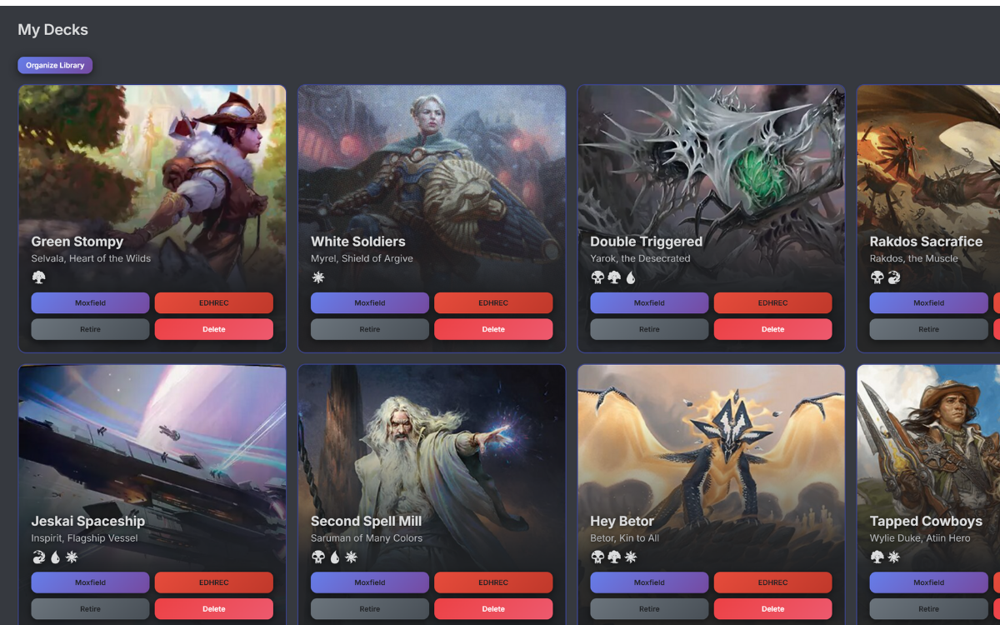

Prismatic Bento Concept
A high-energy landing page for competitive pods.
This version is conversion-first with a dense bento layout: key value, live proof, and feature access all above the fold.
Prismatic Bento Concept
This version is conversion-first with a dense bento layout: key value, live proof, and feature access all above the fold.
Live Interface

Deck Lab
Moxfield + EDHREC workflow accessible from the same deck card context.
Pod Intel
Most-faced commanders and matchup records update in real time.
In-Game Tools
No context switching during games. Keep flow inside the tracker.
Bento Feature Grid
Highlight wins, deck performance, and trend shifts before users scroll into details.
Social proof and rivalry stats become a conversion lever.
All sessions and decks stay aligned on desktop and mobile.
CSV/JSON export surfaces trust and supports long-term player archiving.
CTA Zone
This layout ends with one direct action and one compare action, keeping decision friction low.